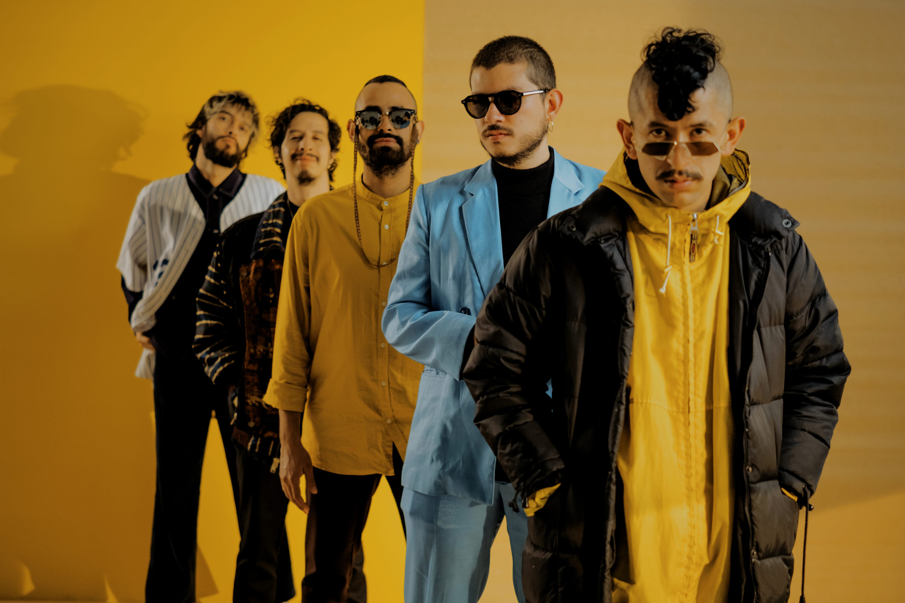
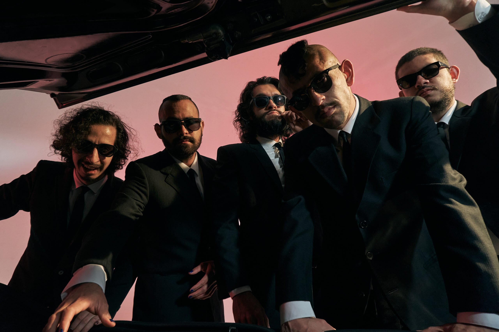
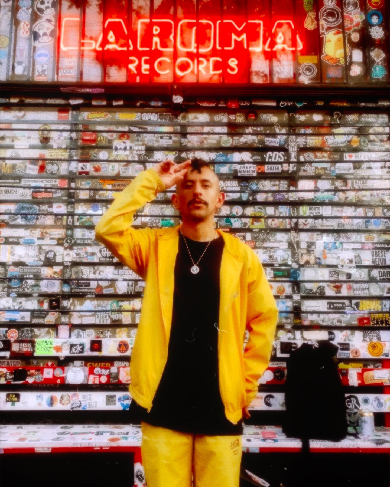
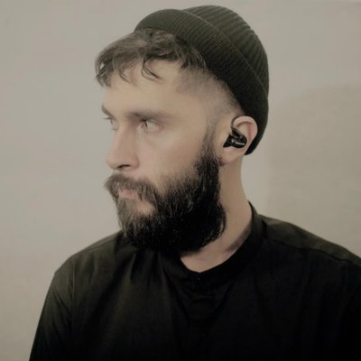
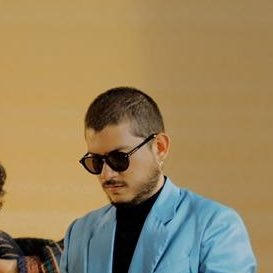
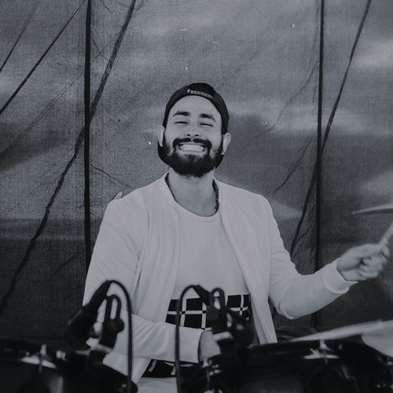
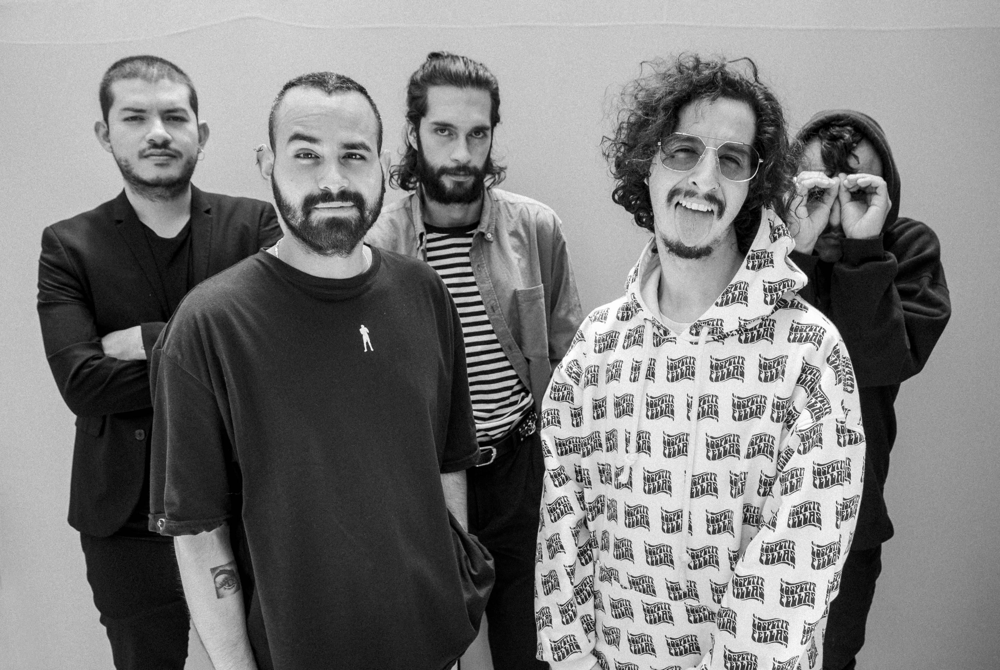

LosPetitFellas, el renacer de la música alternativa
Todas las ciudades tienen sus historias. Historias de la gente, de los lugares donde se convive y surgen las relaciones que nos definen como habitantes.
LosPetitFellas cuentan justamente estas historias desde la capital colombiana. Bogotá es el marco donde, con ritmos como hip hop, jazz, funk, soul y blues (aunque sin género estricto que los defina), estos cinco músicos nos hacen conocer su particular realidad.

Biografía
LosPetitFellas es un proyecto musical alternativo que nace en el 2006 bajo el nombre de Pet Fella y liderado por su Vocalista: Nicolás Barragán, quien en el 2011 da a conocer su primer trabajo discográfico "Querido Frankie".
Ganadores del concurso de Interpretación de Idartes 2011, Banda finalista en el Festival de músicas "Me Gusta" de Teusaquillo; Artista Telonero Nacional para el concierto de Canserbero (Venezuela) y Swan Fyahbwoy (España).
Ganadores de la convocatoria "Ciclo de Conciertos" en la Fundación Gilberto Alzate Avendaño en el Segundo semestre del 2011, Nominado en la categoría Hip Hop en los premios Shock 2011 y ganador a Mejor Artista Hip Hop 2012 en los Premios Subterránica son parte del trabajo desarrollado por esta Joven banda Bogotana, quien trae consigo, junto a sus instrumentos, un exceso de adrenalina en tarima que pretende, sino cambiar el mundo, si lograr hacerlo más amable por 3:30 seg en cada canción.

Integrantes
Cinco personas talentosas con pasión por la música yendo con la intención de generar un espacio positivo, creativo y fresco para la música alternativa en el país. Influencias de Jazz, Funk, Hip Hop, Soul y Blues, caracterizan hoy por hoy a esta banda como una de las más interesantes en la escena independiente nacional.
Una propuesta, hoy conformada por Nicolás Barragán vocalista, Sebastian Panesso Guitarrista, Andrés Gómez (Nane) Teclados, Daniel Pedrozza Bajista y Cesar Henao Baterista.
Vocalista: Nicolás Barragán

Cantante de Hip-Hop Bogotano que inicio este proyecto bajo el nombre de Pet Fella, rimador, periodista, comunicador social de profesión y escritor de la eltra de sus canciones que busca inundar con su frescura y sus interesantes letras el panorama de la música latinoamericana, que se abre paso como una nueva generación que hace las cosas a su manera, desde el corazón.
Guitarrista: Sebastian Panesso
Guitarrista, compositor y en ocasiones cantante perteneciente a la agrupación LosPetitFellas desde su inicio, compuso la tan aclamada canción "El cielo" que hace parte de la segunda parte del albúm 777 llamado "A quemarropa".
Teclados: Andrés Goméz

Tecladista egresado de la universidad del bosque del programa de formación musical con énfasis de interpretación.
Bajista: Daniel Pedroza

Bajista egresado de la universidad del bosque del programa de formación musical con énfasis de interpretación es miembro de la agrupación desde sus inicios y forma parte vital en el proceso de composición de sus canciones.
Baterista: Cesar Henao

Baterista de la agrupación LosPetitFellas egresado de la universidad del Bosque y nominado a los premios LatinGrammy 2018.
Nicolai Fella señala que desde el lanzamiento formal de Los Petit Fellas, el crecimiento y evolución de la agrupación es evidente en la madurez de su propuesta sonora y el contenido de sus letras con un espíritu urbano latente y alta carga humana y social al despojarse por completo del miedo a expresar su arte traducido en rimas.
Los Petit Fellas es un lugar, son cinco amigos por la música, una idea, un concepto, un momento, una canción que se regala.
~ by LosPetitFellas
